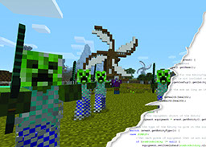
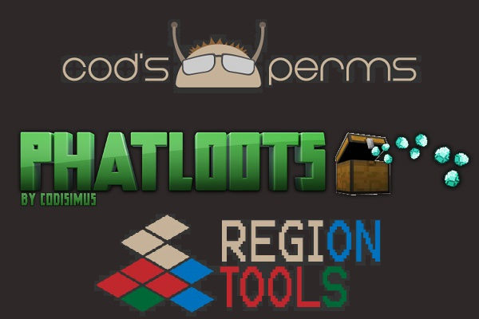
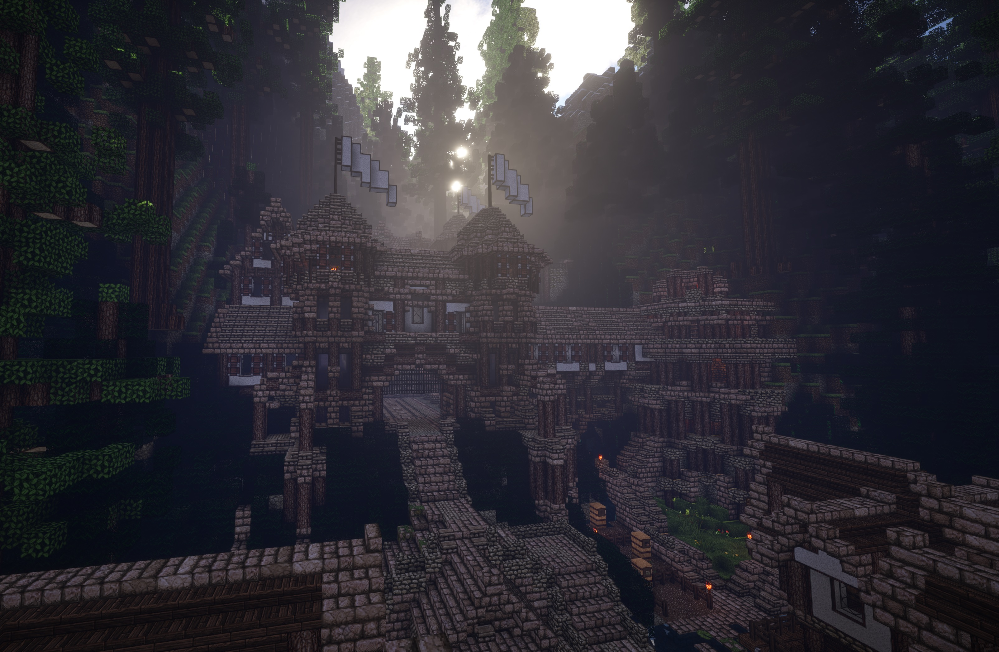

Development
Have you ever wanted to create your own Minecraft server? Do you already have your own server but can never find the plugins that you need? Why don't you take matters into your own hands and create your own server and Bukkit plugins?
Click here to find out all you need to know about setting up a Minecraft server and programming for it. Here you will find information about my book as well as other resources to make coding Bukkit plugins much easier.
Here you will even find sample servers that you can download and start off with.
Plugins
I have been programming Bukkit plugins for over 5 years now. In that time I have created many private and public plugins for Minecraft servers.
Here you will find all of my plugins that are currently supported by me. Some of these have never been released on BukkiDev and are just a treat for visitors to my website. Others have been a part of the Bukkit community since 2011.
Click here to view these and other plugins. I am sure that you will find them to be very useful on your Minecraft server.
Servers
As a plugin developer I have helped numerous Minecraft servers. Some I have helped more than others, and one has been solely developed by myself and a fellow coder. That server is ProspectMC.
Here you will find all of the information you want about ProspectMC as well as other servers which used my custom made plugins. Here you will find plenty of screenshots and videos. If you are looking to play Minecraft with friends and have a good time then these servers will help you do that. No matter your preferred play type, these servers have you covered.